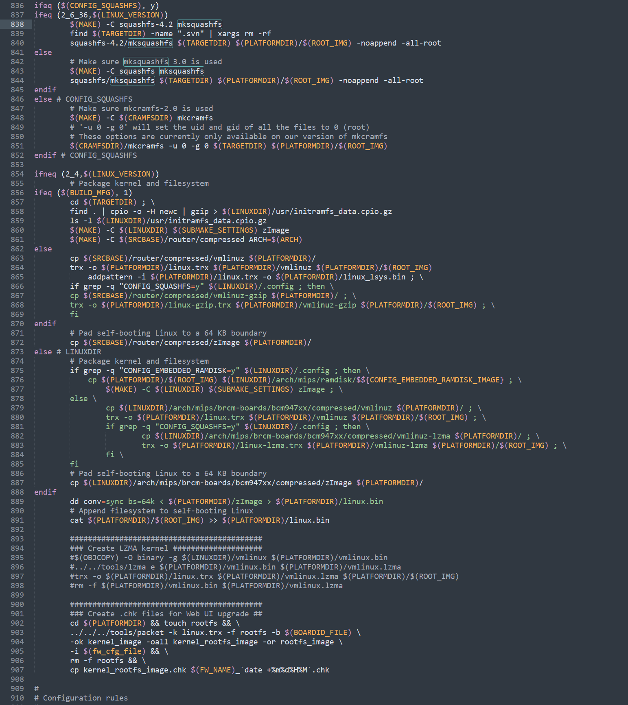

Netgear R6400v2 固件重打包
周末看到网件出新安全公告了，然后把新固件拉下来看看手上的洞被补了没。
没有哈哈哈哈，但是新版固件中debug页面开启telnet的勾选框已经没有了，不知道是不是之前报的登录程序漏洞的原因。
没有telnet就不能调试，那得多难受，试着整一个出来。这里得提一下，网件官方可以下载到所有固件，并且都是不加密的，这点十分友好。既然有固件，那想添加功能通过重打包来实现就可以了。
下面主要记录操作过程,就当是在记笔记。
先看固件结构：
1 |
|
三部分组成，0x3A长度的数据 +TRX 头 + LZMA 压缩的数据 + Squashfs 文件系统，其中开始的0x3A是网件自己的头，LZMA 压缩的是linux kernel， 最后是squash格式的文件系统。
通过对比多个固件，网件自己的头是可以分析出来个大概的：
1 | x@ubuntu 6400_104120 hexdump -C R6400v2-V1.0.4.120_10.0.91.chk -n 58 |
0-8字节是固定的， 9-0x10字节是固件的版本号
0x10-0x17, 0x20-0x27是checksum信息
0x18-0x1f是固件的大小
0x28-0x39是固件的设备相关信息
更具体的可以自己去分析一下packet文件，记得网上有人分析过。
TRX 的结构如下：
1 | struct trx_header { |
将固件解包后在文件系统中翻了翻，发现busybox以及utelnetd相关文件都还在，只是web接口没了。
1 | x@ubuntu 6400_104120 binwalk -Me R6400v2-V1.0.4.120_10.0.91.chk |
那我们只要修改文件系统在启动的时候开启telnet就好了，虽然没有init相关脚本，但是我们在找一个没有参数的程序，做个”劫持“也能达到目的：
1 | mv /usr/sbin/dlnad /usr/sbin/dlnadd |
接下来就要考虑如何将固件重新打包并能够正常刷进路由器中，固件解包时，只要binwalk跑一下就完事了，但是重打包就相对麻烦一些。我们刚刚修改了squashfs文件系统，所以就需要重新打包squashfs文件系统，但mksquashfs在打包时，有很多细节的参数和配置，这些参数和配置将直接影响我们重打包的系统是否可以正常运行，此外，还有设备只能识别特定版本的mksquashfs打包出来的固件。最后，TRX头是个什么我们也还得弄弄清楚。
这里又得说一下，网件的开发者是相当的友好，不仅提供固件的下载，还提供了所有版本固件中的GPL部分代码以及编译环境。我们下个对应版本的包，参考下它自己是怎么打包的。
1 | wget https://www.downloads.netgear.com/files/GPL/R6400v2-V1.0.4.120_10.0.91_src.zip |
在下载的GPL代码中，tools 文件夹中存放着打包时用到的工具， src/router 下面是路由器相关的，我们看一下Makefile中的打包部分也就知道该怎么做了。在Makefile中搜索mksquashfs，成功定位打包部分代码：

可以看到文件系统的制作部分很简单，直接就是用默认的squashfs-4.2编译之后直接制作：
1 | mksquashfs xxx xxx -noappend -all-root |
但是我们在之前使用binwalk看的时候明明发现用的是xz压缩方式，所以我们自己做的时候也还是用xz压缩吧。Makefile中制作完文件系统后还有一些其它操作，但是这里我们不需要，我们原封不动的将制作好的文件系统写回原来的位置即可。所以只需要关注下面制作chk部分：
1 | ########################################### |
这里用的是自己的packet工具来制作，我们看下对应的参数都是什么意思：
1 | ./packet --help |
-k 是kernel文件
-f 是文件系统的名字
-b 是设备id相关信息
-i 是配置文件
kernel我们不用动，文件系统已经打包好了，那我们这里只要关注一下设备id以及配置文件即可。这两个文件在提供的GPL压缩包中都有， find一下就好。由于网件自己的头会通过packet生成，所以我们只要关心TRX头中的crc32以及size字段即可。
所以最终的重打包步骤为：
- 准备好修改过的文件系统以及原始固件
- 将文件系统使用mksquashfs打包
- 从原视固件中提取TRX header+linux kernel， 将新的squashfs填充到后面
- 修改crc32字段以及filesize字段
- 使用packet工具生成网件自己的头，生成最终的chk文件
最终使用的打包脚本以及对应说明都放在github上了。
在完成这些工作后我又想起来一个问题，我手里不是有一个很好用的命令执行还没提吗？直接用它开启telnet不香嘛？？！
最后，如果了解固件的启动流程，需要对bootloader做分析，但是我们又拿不到bootloader，该怎么办呢？
有了telnet就好办了，自己编个dd上去，然后查看分区信息之后将boot部分dump 出来
1 | # cat /proc/mtd |
传送门：重打包脚本
参考链接：
Netgear R6400v2 固件重打包
https://avcatshy.github.io/2021/09/29/Netgear-R6400v2-固件重打包/